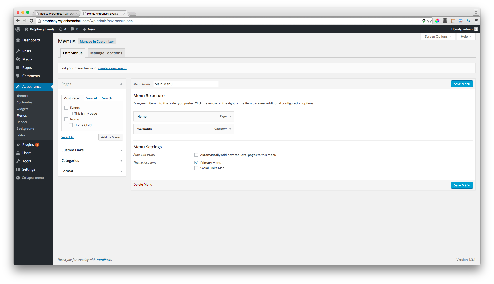
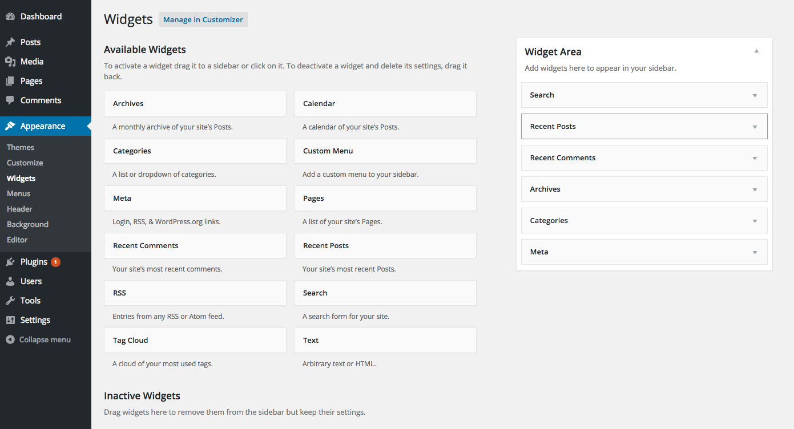
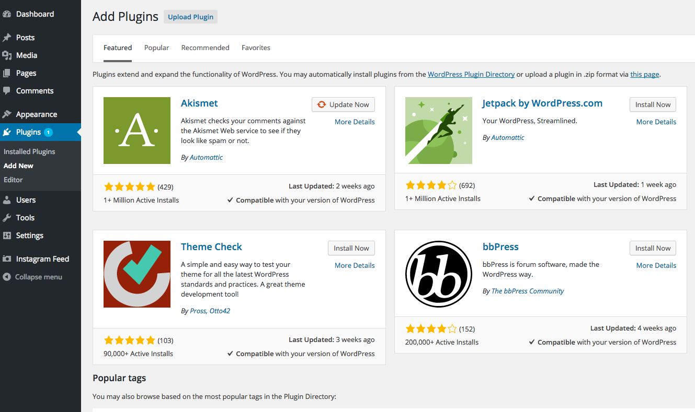
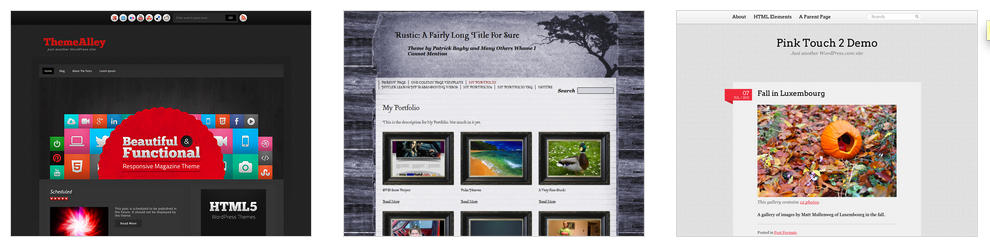
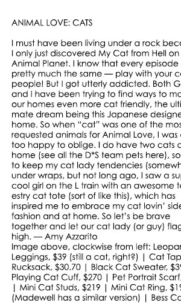
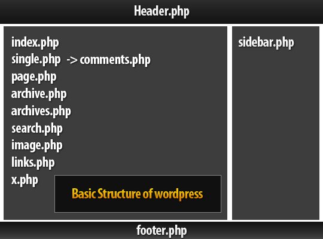
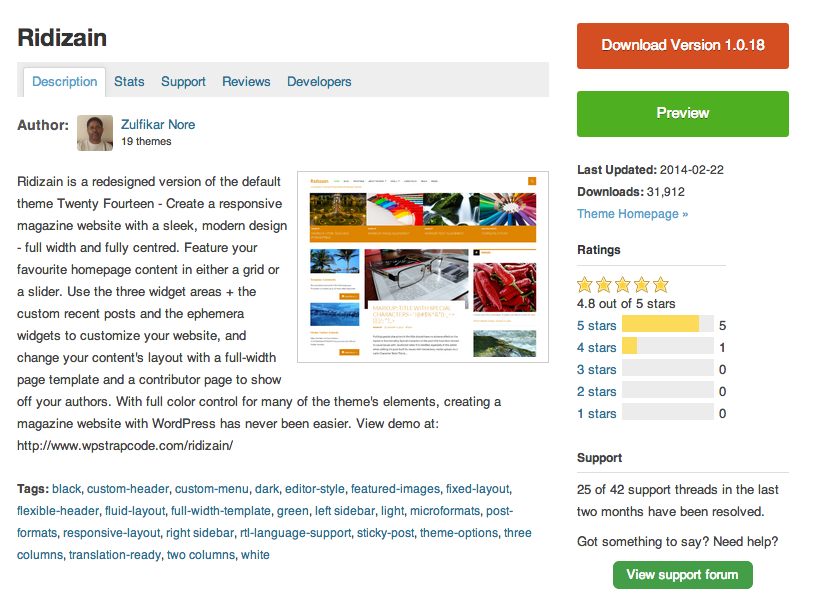
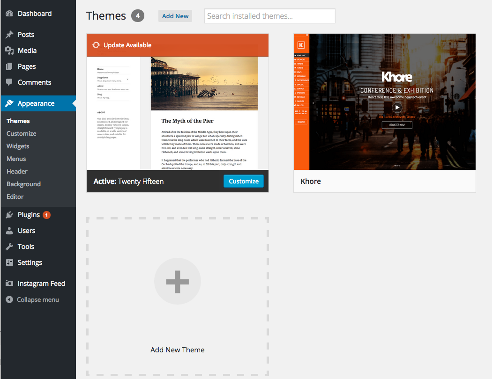
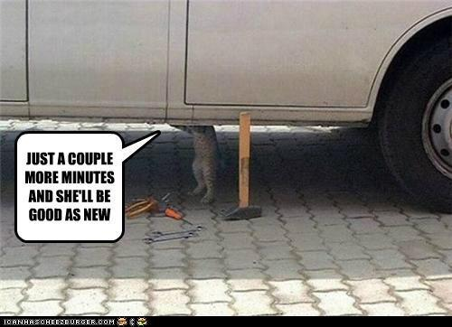

WordPress 101
With Wylesha Rachell & Matt Stills
wfield1@gmail • wylesharachell.com || wfield1@gmail • .mattstills.com
Slides located at: Slides Link
Menus
In order to navigate the site, we set up a menu.
We can make multiple menus.
Common menu locations:
main menu, sidebar menu, footer menu
you can also add a custom menu widget to widget areas
Add & Edit: Appearance > Menus
Menus
Let's try it.
Create two menus and add pages to each. Save.
Notice where the menus appear on your site.
Widgets
Widgets are dynamic content areas.

Widgets
Widgets are often in the footer, sidebar.
Your theme determines where you can add widgets to your site.
Add & edit them: Appearance > Widgets
Drag, drop, save.
Widgets

Let's try it
Checkout the "default" widget state
Customize and add
Edit that widget's settings as you'd like
Plugins
- A piece of software that you add on to your site
- Gives us advanced features
- Helps us manage our site better
- Many plugins are free.
- You can even build your own plugin!
Add & Edit: Dashboard > Plugins
We can also find more detailed plugin listings at wordpress.org/plugins
Image from Laura Eagin's WordCamp talk 13 WordPress Mistakes I've Made
Free Plugins
Premium Plugins
Find plugin Super RSS Reader and install it
Themes
A theme is a set of files that style your site's content.

CSS + a few extra features
Anatomy of a website


Content
HTML
CSS
Theme Files
More info: Anatomy of a Theme
So Many Themes
Free themes:
- Default pre-loaded themes:wordpress.org/themes
Commercial themes:
- ThemeForest
- WooThemes
- iThemes
- The Theme Foundry
- StudioPress
Theme Reviews and Support
Find a theme you like!
We recommend searching wordpress.org themes, but the internet is your oyster.
Remember:
- Basic theme structure and content areas
- Is anything broken?
- Is it responsive?
- Did it load slowly?
- Is it well supported?
- What do others say about it?
Lets Try it
Install it.
"Live Preview" it.
Activate it
My WordPress Site is all set up! Now what?
My WordPress Site is all set up! Now what?
2. Keep up on maintenance:
- It's important to update your installation of WordPress, your plugins, and your themes when new version are released.
- WordPress will prompt you to do this whenever you log in.
- Make a back-up first!
My WordPress Site is all set up! Now what?
3. Get involved in the WordPress Community:
- Attend WordPress Meetups
- There are WordPress-centric blogs (naturally), podcasts, Twitter accounts, Facebook groups, and more — join, follow, & engage!
- Get familiar with PHP so you can start theming!
Resources
- The WordPress Codex is your new best friend. Bookmark it. Search it. Edit it. Love it.
- Codex: Getting Started with WordPress
- Codex: WordPress Lessons
- WordPress.tv
- WPUniversity
- Zoe Rooney's blog
There's much more out there! If you find something extra awesome, tweet it to me. :)
Questions?
We're here to help!

Email:Wylesha Rachell ||
Matt Stills